History
This format is over 150 years old.
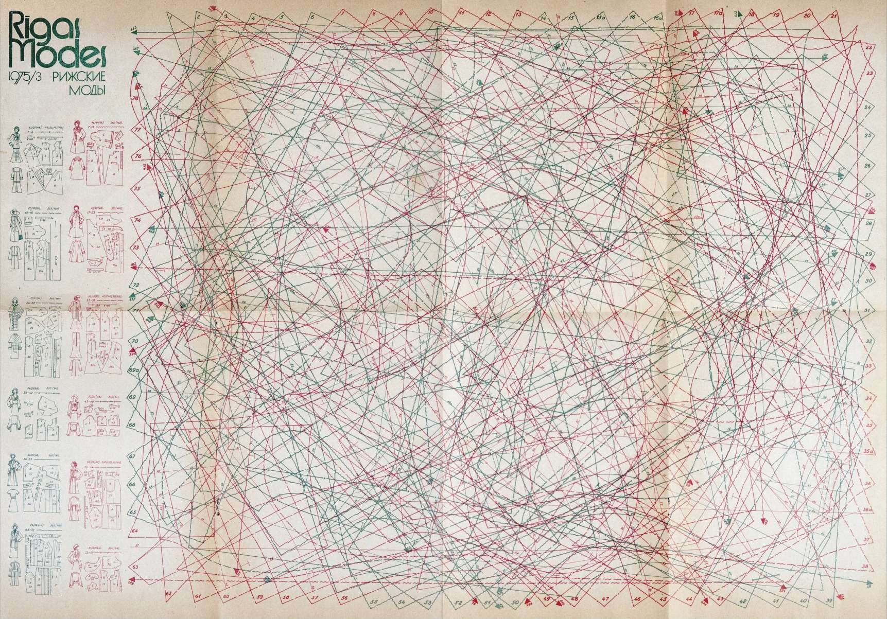
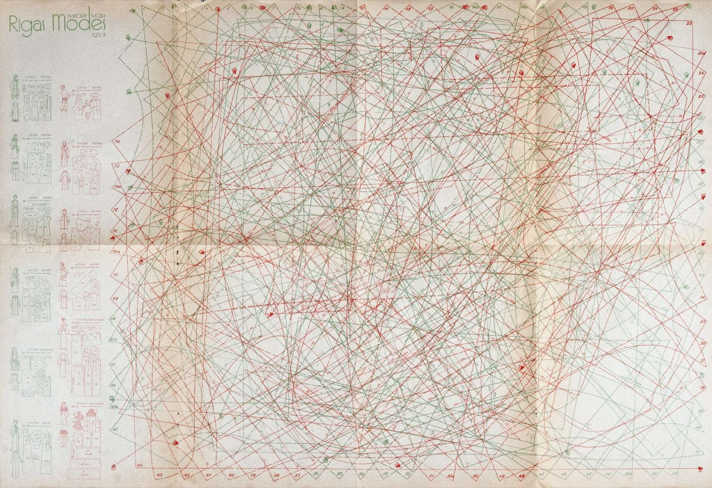
Sheets with patterns for dozens of garments printed on top of one another appeared in the mid-19th century.
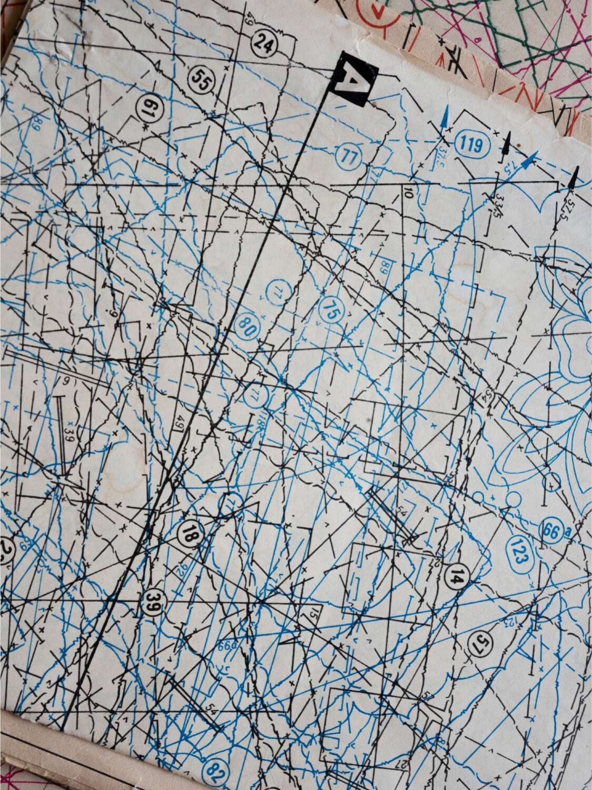
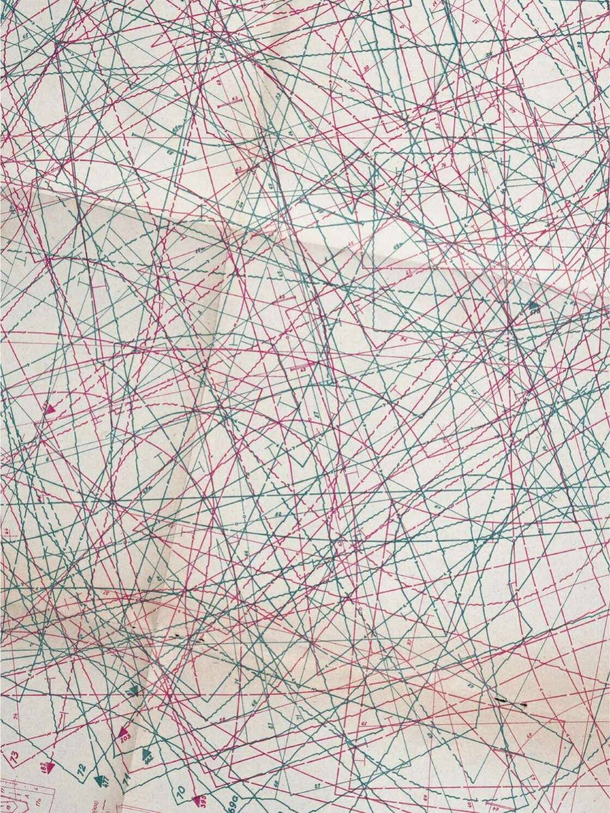
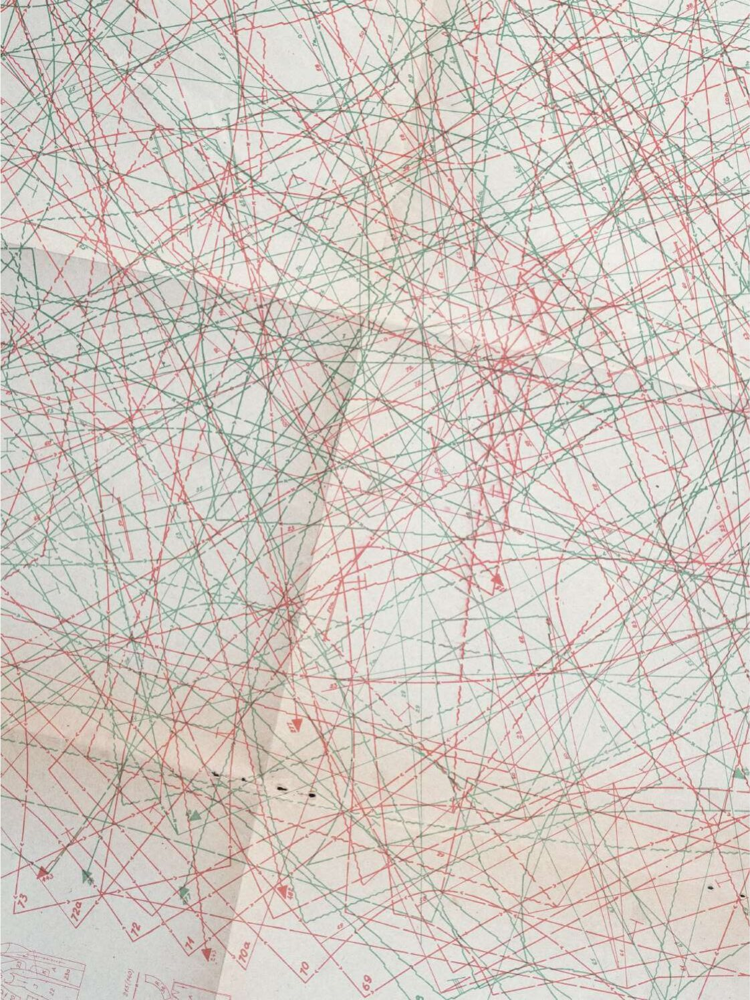
Similar inserts could be found in magazines such as Der Bazar (Berlin, from 1854), Harper's Bazar (New York, from 1867) and El Salón de la Moda (Barcelona, 1884–1916). The ones shown here come from two Soviet magazines: Zhurnal Mod (Moscow) and Rigas Modes (Riga).
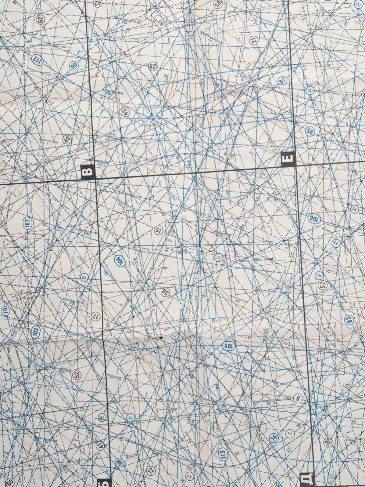
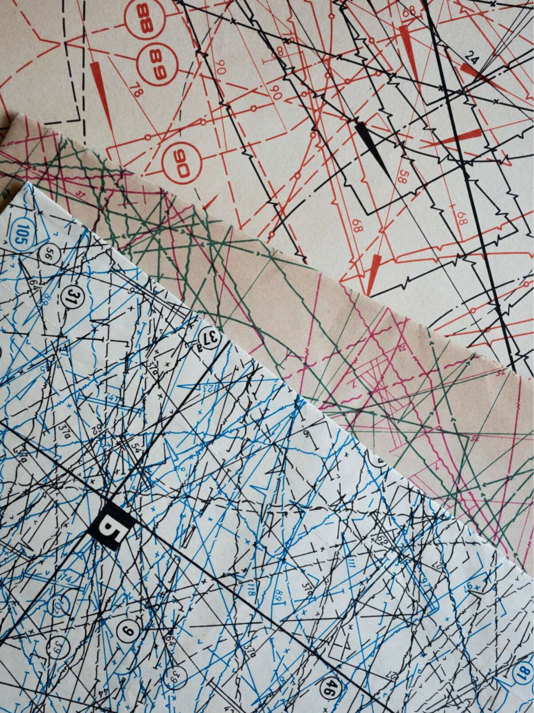
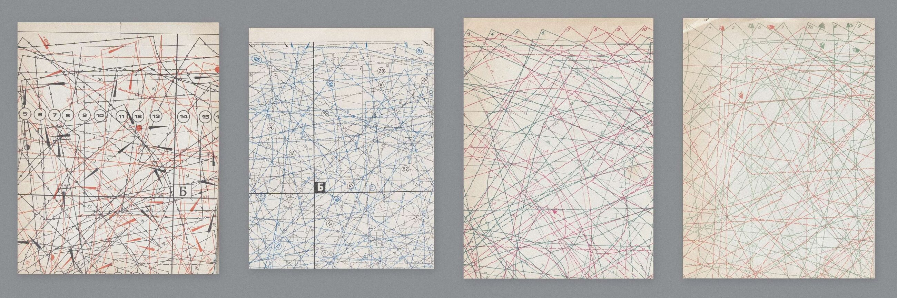
The pieces were overlapped to fit as many as possible onto a single sheet.
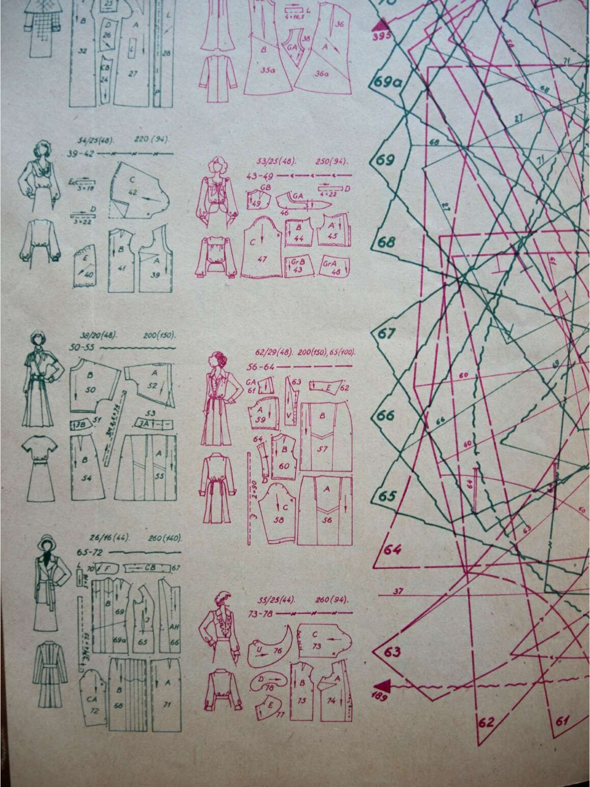
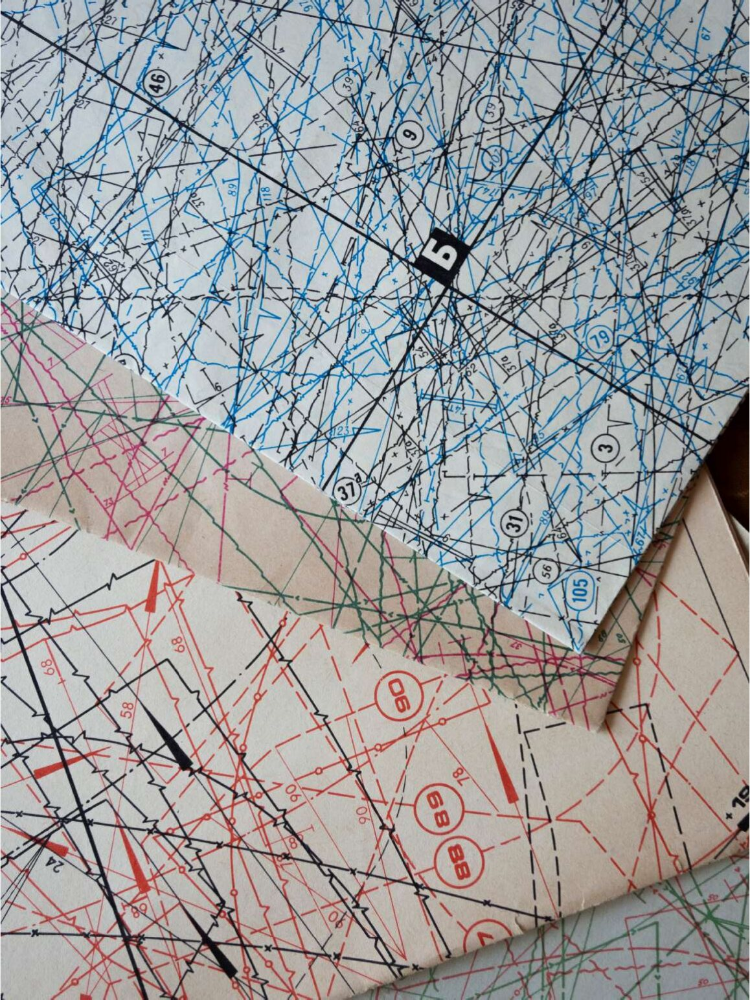
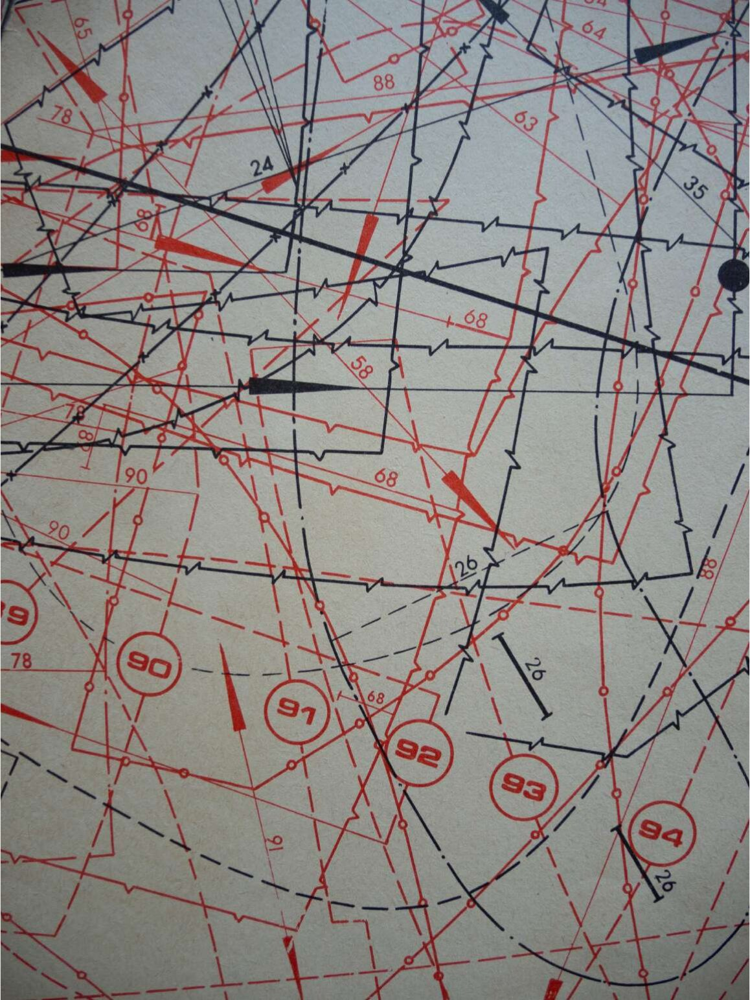
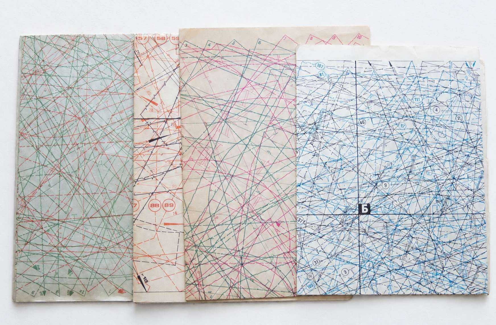